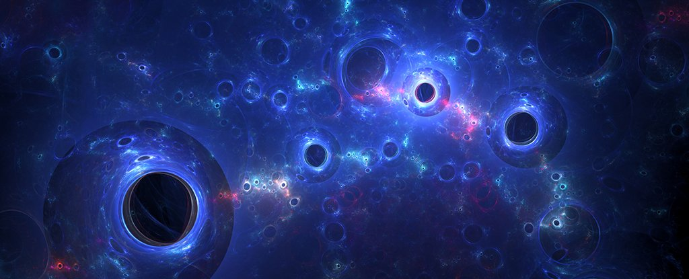
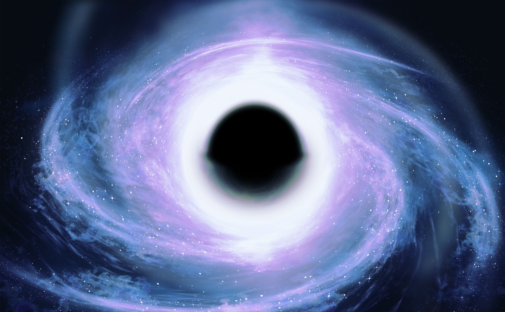

Dark Matter

White Hole
 - Copy.jpg)
.accordion-body, though the transition does limit overflow.
.accordion-body, though the transition does limit overflow.
.accordion-body, though the transition does limit overflow.
White holes are theoretical cosmic regions that function in the opposite way to black holes. Just as nothing can escape a black hole, nothing can enter a white hole. White holes were long thought to be a figment of general relativity born from the same equations as their collapsed star brethren, black holes. More recently, however, some theorists have been asking whether these twin vortices of spacetime may be two sides of the same coin. To a spaceship crew watching from afar, a white hole looks exactly like a black hole. It has mass. It might spin. A ring of dust and gas could gather around the event horizon — the bubble boundary separating the object from the rest of the universe. But if they kept watching, the crew might witness an event impossible for a black hole — a belch. "It's only in the moment when things come out that you can say, 'ah, this is a white hole,'" said Carlo Rovelli, a theoretical physicist at the Centre de Physique Théorique in France.
Cosmic rays are atom fragments that rain down on the Earth from outside of the solar system. They blaze at nearly the speed of light and have been blamed for electronic problems in satellites and other machinery. Discovered in 1912, many things about cosmic rays remain a mystery more than a century later. One prime example is exactly where they are coming from. Most scientists suspect their origins are related to supernovas (star explosions), but the challenge is that cosmic ray origins appeared uniform to observatories examining the entire sky for many years. A significant leap forward in cosmic ray science came in 2017 when the Pierre Auger Observatory (which is spread over 3,000 square kilometers, or 1,160 square miles, in western Argentina) studied the arrival trajectories of 30,000 cosmic particles. It concluded that there is a difference in how frequently these cosmic rays arrive, depending on where you look. While their origins are still nebulous, knowing where to look is the first step in learning where they came from, the researchers said. The results were published in Science.
Unlike normal matter, dark matter does not interact with the electromagnetic force. This means it does not absorb, reflect or emit light, making it extremely hard to spot. In fact, researchers have been able to infer the existence of dark matter only from the gravitational effect it seems to have on visible matter.
Cosmos often simply means "universe". But the word is generally used to suggest an orderly or harmonious universe, as it was originally used by Pythagoras in the 6th century B.C. Thus, a religious mystic may help put us in touch with the cosmos, and so may a physicist.
A nebula is an enormous cloud of dust and gas occupying the space between stars and acting as a nursery for new stars. The roots of the word come from Latin nebula, which means a “mist, vapor, fog, smoke, exhalation.” Nebulae are made up of dust, basic elements such as hydrogen and other ionized gases.